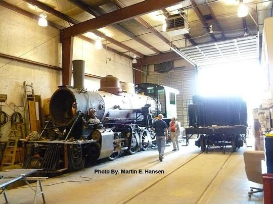
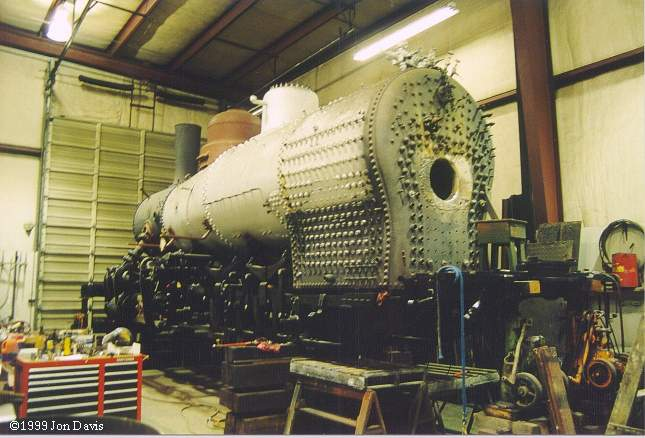
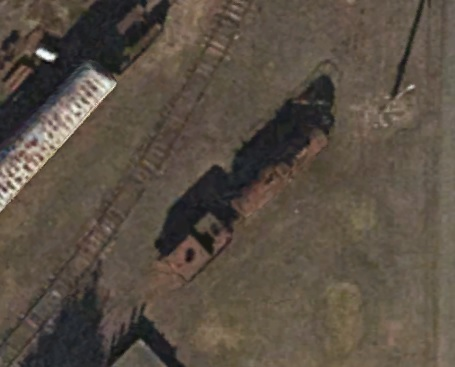

This locomotive may not be viewable



Last updated: 4 September, 2025
| Builder: | Baldwin Locomotive Works |
| Build #: | 57613 |
| Date: | 1924 |
| Engine #: | 205 |
| Railroad: | Santa Maria Valley Railroad |
| Website: | www.entropics.us/home |
| Email: | |
| Location: | Best guess: Small Fortune Railcar 635 Walnut St, Independence, OR 97351 This shop is apparently in the process of restoring an old rail car (see website). It seems logical they might be associated with the locomotive. |
| GPS: | 44.859663, -123.187388 In 2015, a locomotive was seen here on Google Earth (Third image). Its no longer seen as of Sep 2025. |
| Phone: | |
| Status: | Restoration, stored |
| Notes: | Tender is from Santa Maria Valley #100 |
This 2-6-2, Santa Maria Valley #205 is privately owned by George Lavacot, and is presently under restoration inside a building in Independence. This Prairie was built in 1924 for the San Joaquin & Eastern of Auberry, CA. In 1933 it was sold to the Santa Maria Valley Railroad, and was put on display in a park at Santa Maria, CA in 1950. Mr. Lavacot purchased the locomotive in 1983. Also inside this building is the tender from 2-6-6-2 Rayonier #14. Weight on Drivers: 96,000.
| Class: | |
| Gauge: | 4'-8½" |
| F.M.Whyte: | 2-6-2 |
| Drivers: | 49 |
| Gear Ratio: | |
| Tractive Effort: | 23,460 |
| Weight: | 128,000 |
| Weight on Drivers: | |
| Length: | |
| Boiler: | |
| Cylinders: | 17x24 |
| Top Speed: | |
| Fuel: | |
| Fuel Type: | Oil |
| Water: | |
| Steam psi: | 195 |